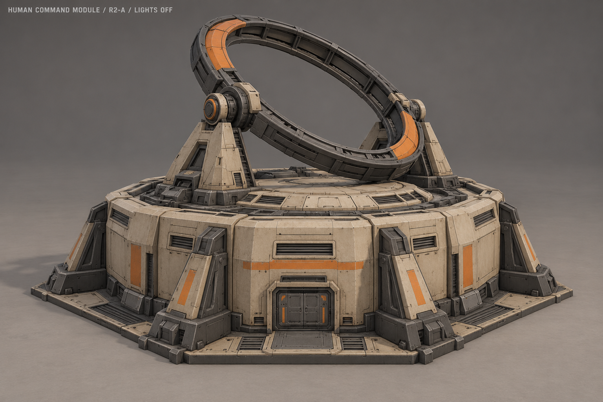
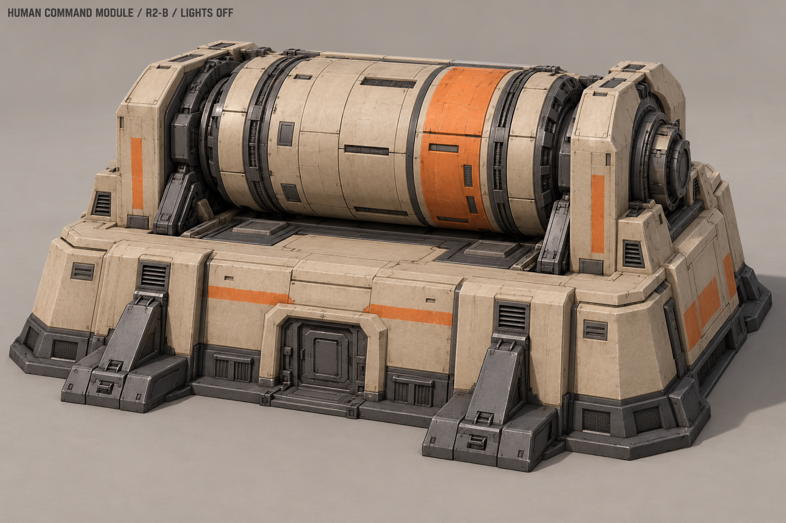
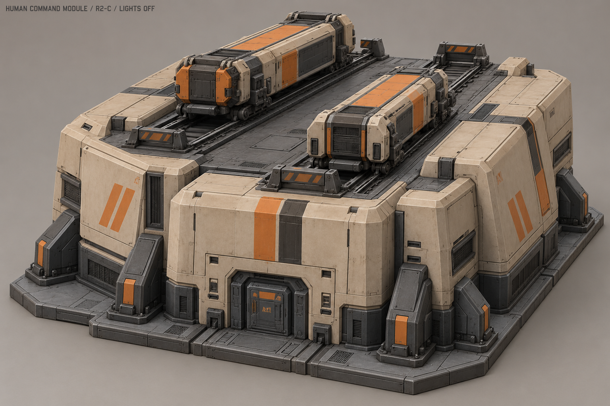
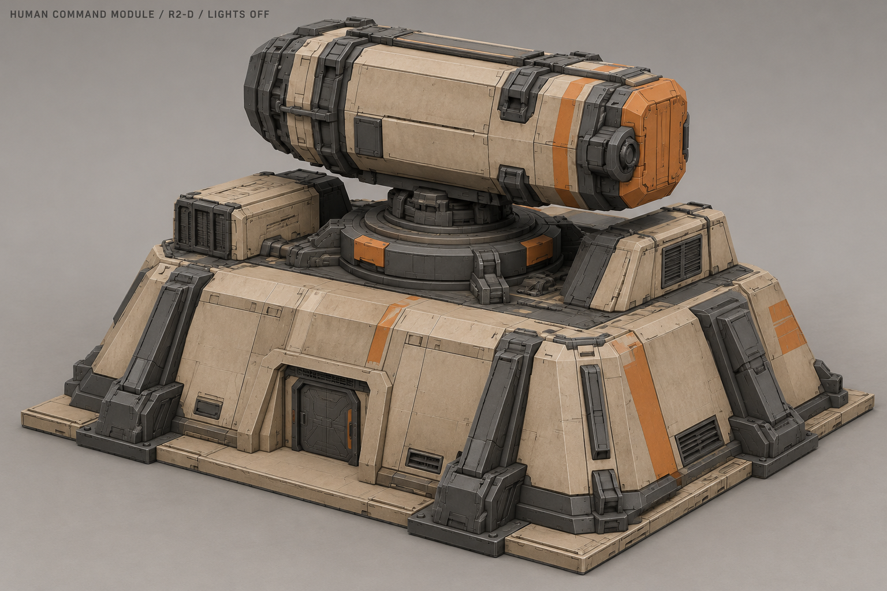
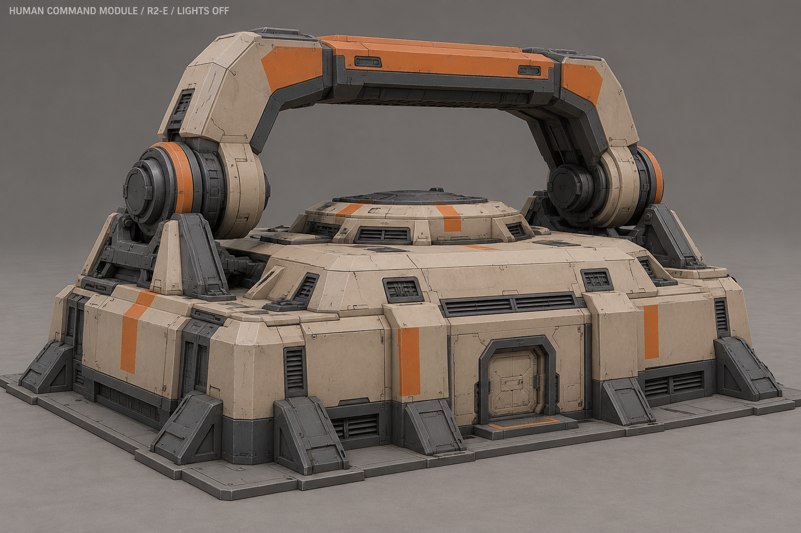
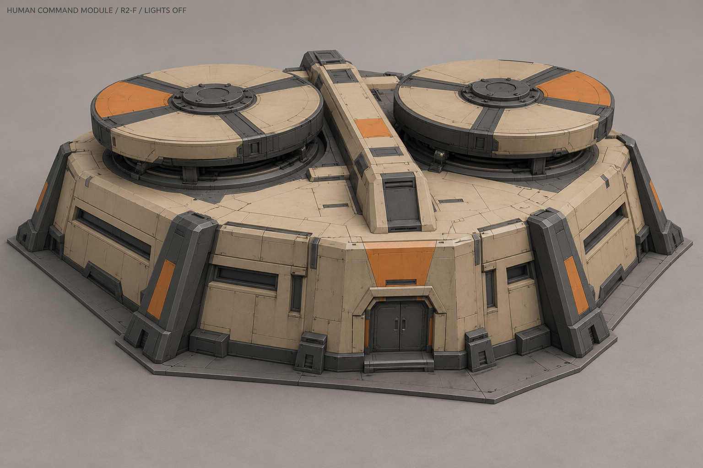
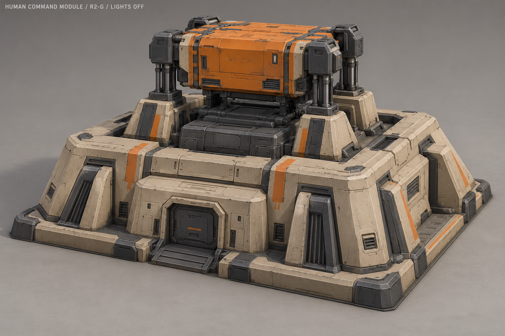
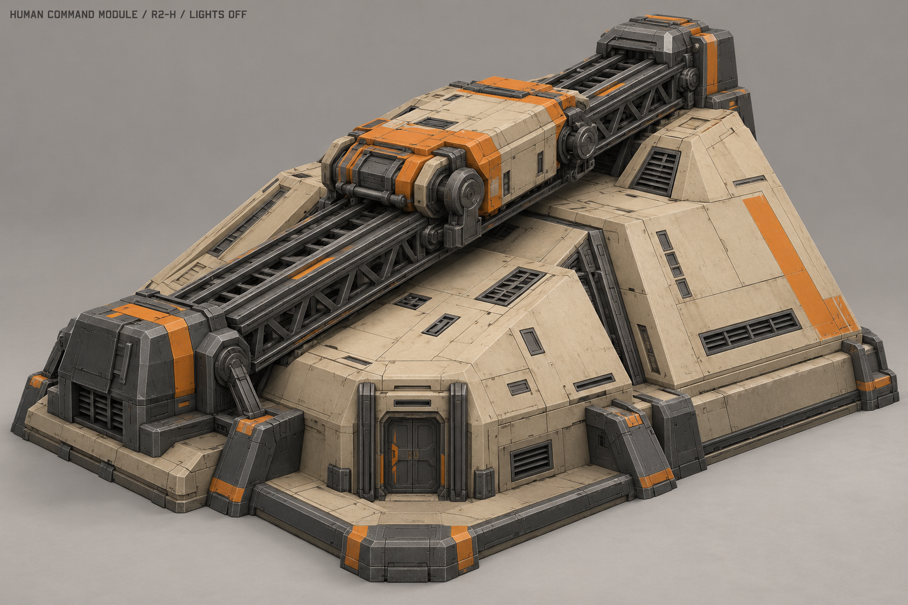

Командный модуль · второй проход A–H
Выбран A «Орбитальная рама» с горизонтальным вращением и электрическими дугами. Уточнённая конструкция, ракурсы и рабочий цикл.
Самостоятельное здание, рабочее пятно 3×3. Крупная вращающаяся или подвижная механика сверху. Без стыковки и соседства со штабом.
Открывает третий уровень технологий; требует завод или аэродром. Собственной очереди пока нет: движение — работа технологического оборудования, точную привязку уточним после выбора.
Все лампы выключены, двери закрыты, механизмы неподвижны. Отдельные схемы показывают предлагаемый принцип движения.
A «Орбитальная рама»

Большое наклонное кольцо на двух опорах над низким корпусом.
Отдельная схема движения
Поворот кольца между боковыми опорами; точную ось и диапазон согласовать с подшипниками на общей геометрии.
Схема принципа, не точный риг и не вход для AI-моделирования. Скорость и привязка цикла ещё не утверждены.
B «Поперечный барабан»

Крупный поперечный барабан между двумя встроенными опорами.
Отдельная схема движения
Барабан вращается вокруг горизонтальной оси; опоры неподвижны.
Схема принципа, не точный риг и не вход для AI-моделирования. Скорость и привязка цикла ещё не утверждены.
C «Синхронные каретки»

Две крупные каретки на раздельных продольных направляющих.
Отдельная схема движения
Встречный ход кареток вперёд-назад в отдельных полосах.
Схема принципа, не точный риг и не вход для AI-моделирования. Скорость и привязка цикла ещё не утверждены.
D «Поворотная кассета»

Крупная вертикальная аппаратная кассета на круглом погоне.
Отдельная схема движения
Поворот кассеты вокруг вертикальной оси.
Схема принципа, не точный риг и не вход для AI-моделирования. Скорость и привязка цикла ещё не утверждены.
E «Качающаяся скоба»

Массивная скоба над закрытым корпусом, закреплённая на боковых шарнирах.
Отдельная схема движения
Скоба качается вперёд-назад на ограниченный угол.
Схема принципа, не точный риг и не вход для AI-моделирования. Скорость и привязка цикла ещё не утверждены.
F «Роторные диски»

Два широких диска на независимых опорах над гранёным корпусом.
Отдельная схема движения
Диски вращаются в противоположных направлениях.
Схема принципа, не точный риг и не вход для AI-моделирования. Скорость и привязка цикла ещё не утверждены.
G «Подъёмный блок»

Большой аппаратный блок над крышей на четырёх направляющих.
Отдельная схема движения
Короткий вертикальный ход блока вверх-вниз.
Схема принципа, не точный риг и не вход для AI-моделирования. Скорость и привязка цикла ещё не утверждены.
H «Диагональный ход»

Массивный диагональный мост с одной крупной аппаратной кареткой.
Отдельная схема движения
Каретка проходит вдоль диагонали крыши и возвращается.
Схема принципа, не точный риг и не вход для AI-моделирования. Скорость и привязка цикла ещё не утверждены.